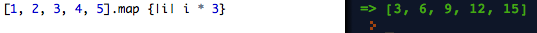
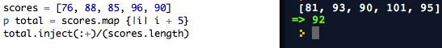

Taniya Prabhakar


Thoughts & Opinions
Following the Map that Changes You
Enumerable Methods-Manipulative Maps
02/28/2015
When you want to manipulate each element in an array, enumerable methods are the way to go! They give you the ability to run through multiple elements without having to explicitly iterate over the length of an array.
Map is one such useful enumerable method. If you have a set of values where you want to change each value, you should use map. It returns a new array with the output from running a block of code once for each element. As in the example below, each number in the array is each multiplied by 3.
Class Grades
Let's say you're a hardworking student taking Calculus in 12th grade. You have 5 major quizzes over the course of the semester that determines whether or not you will get an A (above 90%) in the class. Since the semester is coming to a close, you want to know where you stand.
The image above shows the scores you received. Using map, you are easily able to add those 5 extra credit points to each quiz score in the array. Since you want to find whether or not you have an A in Calculus, you take the sum of the values in the array with .inject(:+), and divide it by the total number of quiz scores. Congrats! Now you know you have an A in Calculus, and map methods are a bit clearer.